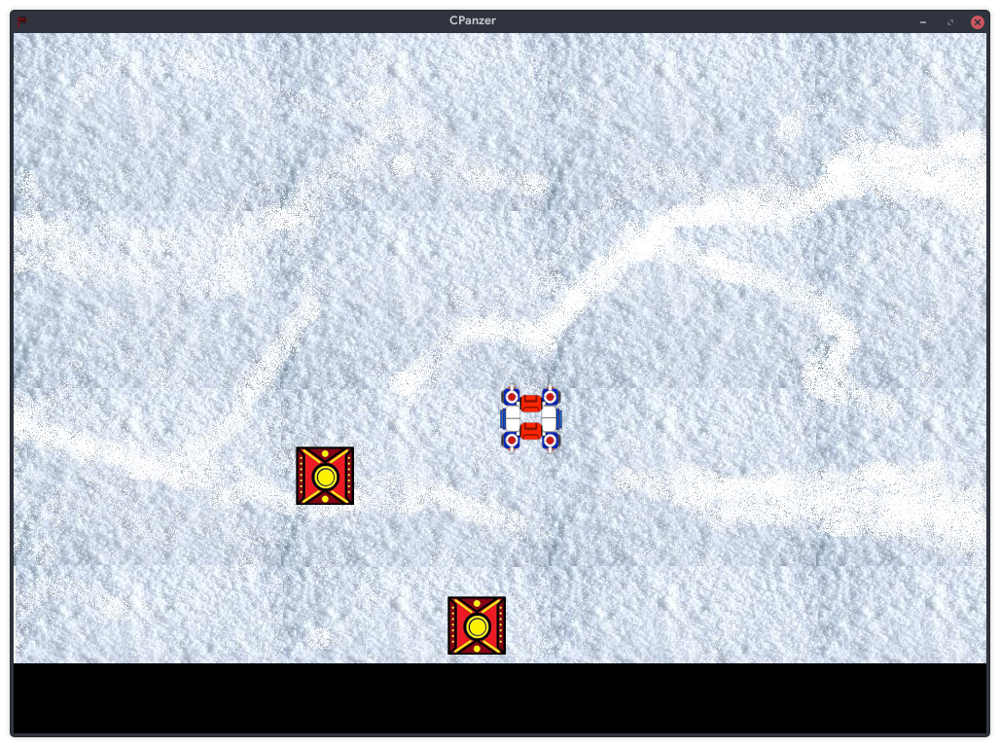
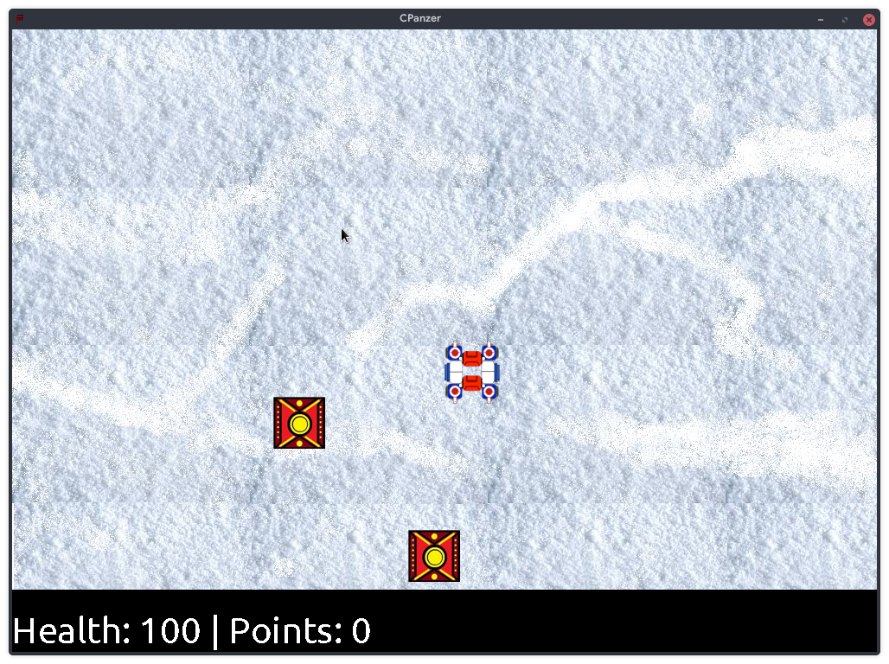

I’ve been learning C from online resources, mostly because:
C is used extensively in Linux utilities; among the notables are the Linux kernel itself, the GNU utilities, git, vim/neovim, etc. So if you want to contribute to these projects you’ll need to learn C
C is portable but very low-level; you learn a lot about how computers work by doing a lot of the heavy lifting such as memory management yourself.
C has a considerable use case in embedded systems
I learned C mainly because I wanted to learn more about computers and to contribute to open-source projects as well. One of the things I decided to do while learning C is to go back and rewrite some of my Python projects in C in order to get knowledge parity between the two languages.
After rewriting Eye Time Tracker in C (code here), I wanted to move onto a more user-friendly program, and so chose to build a small game. I’ve already worked on a game called panzer with my friends, and I thought I could whip up a small prototype version of the game with most of the same gameplay since I already have access to high-quality textures, sound bytes etc. from the Python version.
After a couple hours finding a sample program for SDL, tearing it apart and then putting it back together, along with looking a couple APIs up, I was up and running with a new Panzer:

The way this version works is that there is a struct called textures, which is really just a linked list with an SDL texture (the texture the game will display for this object), an SDL Rectangle object (which actually gets drawn and has the x and y coordinates, width and height of the image), a name for the actual entry of the list (for example, the player texture gets the “player” name, enemy gets “enemy” etc.) and more. Whenever I need another feature (like keeping track of points or health), I add another variable inside the struct and set the default value appropriately.
At this point, the player can move the player tank in all four directions, however the sprite itself doesn’t rotate. There’s no nozzle for aiming, and the enemy characters do not have any movement built in right now.
After this, I decided to engage in a bit of cleanup work. First, I spun off the big switch statement for getting the input from the player in a new header file input.h, which returns an array from which I can extract the different variables. For example, if the player moves up, I have an element of an array set to the amount moved up (amount moved down will be negative of this), etc. If the player presses the button for pause (the P key for now), the value of an element of the array corresponding to that one will be set to 1. This approach cleans up the main game loop and makes it much easier to move around code as per my needs, and even to turn features off if they aren’t working so I can get a working copy of the game quickly for me to perform some diagnostics.
After a little bit of work involving expanding the textures struct (I should really have renamed this thing, it’s very confusing) with more attributes, writing a couple more functions to move all the enemies on screen towards a set of coordinates of my choosing, and adding specific instructions for killing the enemy once a player collides with it and removing objects with zero health, I had a fairly functional demo.
Oh, and did I mention I also added pausing the game as well? It was fairly trivial since I already had the Python version to look at, and the C version works pretty much the same. There are basically 2 ints, pause and pauseRun. The function for taking input updates the value of the pause variable, and if it does indeed change to 1, it checks if pauseRun is 0. If it is, that means the game has been paused and the pause functions haven’t run (right now it comprisises of a printf() statement, but anything we need can go here). It also sets pauseRun to 1 since we have run the pause statements and we don’t want to put the program into a loop. If the player then unpauses the game, the pause value goes to 0 and in this case (when the game is actually running), pauseRun is also set to 0 for obvious reasons. In the case when pause equals zero, we add all of the game functions, like updating player and enemy coordinates, redrawing the screen etc.
This is the case where making a function out of the switch statement for input came in handy, and in fact, my philosophy here is to write as little code as possible in window.c, and it should be very accessible to a beginner to see what is happening with the use of well-named functions and extensive comments.

Now, one thing that I observed while running valgrind on the game was that I was losing ~6Kb every time. I checked my code a bunch but I wasn’t really able to understand where these bytes were going. I had managed SDL’s structs fairly well and the code I added should automatically be freed. I travelled back to the first commit ever (which was just a slight modification of the tutorial program I followed), and the very same amount was being lost according to valgrind. This confirmed that it was not my code, but rather the SDL library that was at fault.
Of course, not all of them are someone else’s fault; I added font rendering support and the game started to consume 30 MB more every second it ran. It was actually somewhat amusing the first time around, seeing it gobble up this much memory and just crash. Of course, it was easily fixed by using SDL_CloseFont(), which complements SDL_OpenFont().
I also consolidated all #includes and all the constants inside one header file, constants.h, which is to be the C analogue of resources.py. This was done mostly to find any shared header files in my code and if so, to only include them once. This is also a really easy way to move constants from one file to another.
After this, I worked on using bools instead of ints wherever I could so that some memory could be saved. It’s not a huge savings, but every bit counts!
So, now the game looks like this:

The next phase of development focused on adding rotation to the player object, so it would face downwards when you made it go down, for example. Along with this I got rid of some unncessary functions in objects.h and made a basic enemy generator which would automatically create enemies as they were needed. That last feature needed some work because enemies could render on top of other enemies since there weren’t any checks there. Besides that, the addition of the nozzle, it’s own specific rotation (to aim at the various enemies), and making the enemies attack the base were other notable additions.
Most of the above changes took place by adding some more variables (an angle variable in textures struct, for example), changing the values of other variables (just make the enemies move towards the base’s coordinates instead of the player’s!) or leveraging SDL (like by replacing RenderCopy() with RenderCopyEx(), I was able to specify an angle by which the sprite should be rotated)
After these changes, the game was fairly close to being done, so I made it public by releasing it on GitHub here.
The last few things left on my roadmap included projectiles, so I spent some time adding them to the game. After a little bit of work, I realized there was more to do here since SDL takes the coordinates of a rectangle from the upper left corner, whereas pyglet for the Python version of panzer always used the center of the sprite. Due to this, I was pretty spun around trying to fix projectiles.
This is the code I later arrived at for creating a projectile:
if (projectile && player->ammo) {
float rx = ((player->rect.w) * cos(PI*a/180));
float ry = ((player->rect.h) * sin(PI*a/180));
int x = player->rect.x + player->rect.w/2 + rx;
int y = player->rect.y + player->rect.h/2 + ry;
texlist = addTexture(texlist, rend, PROJ_TEX, "projectile",x,y);
texlist->rect.x -= texlist->rect.w/2;
texlist->rect.y -= texlist->rect.h/2;
texlist->angle = a;
player->ammo -= 1;
}I actually revisited my nozzle creation code and used a little trick I used there in here as well (basically shifting the origin). This later also came in handy to fix the base’s position. Now that I think about it, I really should’ve just done this in addTexture() instead so I didn’t have to keep doing this….
After adding the projectile, I noticed that if one was to fire very fast at an enemy, the game would segfault. I spent a lot of time trying to determine why something like this happened, and was able to deduce that the collision action between the enemy and projectile was a little bit broken. However, for the life of me I could not figure out what I had done wrong!
I had taken great pains to ensure I didn’t leak memory or anything like that. I used valgrind to monitor such things, and the only memory that was lost was because of SDL, not cpanzer.
This issue ground development to a halt because I did not want to work on anything else when such a critical bug was persisting. I looked up a lot of stuff pertaining to cleaning up SDL objects in case I actually had missed something, but everything turned up empty.
It was at this time that I got a little help from an experienced programmer, who introduced me to rr, an extremely useful debugger that helps see values of variables etc. Now rr doesn’t actually run on my machine, because the CPU is unsupported for some reason, but he was able to run the code on his machine and found that my function for removing dead objects from the linked list worked very badly, and would frequently access different sections of memory and so would make the game segfault.
Finally, the problem was clear, and the solution was also very clear. I fixed this by simplifiying the code a bit so that the game would iterate through every element in the list and only find the predecessing node if and only if that node was meant to be removed. The old code would just keep calculating the last node every time, and while it did work, it was also complicated.
At this point, all energy went towards adding audio to the game. I initally tried using the inbuilt SDL audio capabilities, but I wasn’t able to get it to play, so I used SDL_mixer and followed the sample code to build a function to do so. After that worked, I stored all the audio stuff in audio.h. The way audio works is that I have a generic function to play any audio file I give the path to, but I only call a couple wrapper functions for each audio file I want to play. This also allowed me to add a variable to enable or disable audio completely if I so chose.
The last feature left was building a better pause screen. I wanted to have 2 options here, one to resume the game and one to exit the game. I decided to do this by simply printing text, since I already had all the functions written for it. In the course of building a pause menu, I discovered that writing text to the screen had some useless functions as well, so I removed the updateHUD() function and made createText() write text directly to the screen. This also removed the need for a struct I’d created just for text since all the work could be done in one function.
All this work reminded me that in the original Panzer, there was a feature where the text would be automatically set and all one had to do was specify the original coordinates. The spacing issues could be sorted out in the function itself. This seemed to be a feature that could be implemented easily in this version as well, and would get rid of some of the magic numbers in the code. Ironically, for this I defined some custom functions that wrapped around createText() and some custom variables to keep track of everything. I ended up using this only for the pause menu.

So here, we are, at the end of the road. The rewrite works perfectly and has accomplished most of what I envisioned for it. I gained a ton of experience while trying to write and debug the code, and it’s going to help a lot in the future when I work on other projects. While it’s (in the grand scheme of things), a small project, I believe in Sir Francis Drake’s motto, Sic Parvis Magna, or “greatness from small beginnings”.
This website was made using Markdown, Pandoc, and a custom program to automatically add headers and footers (including this one) to any document that’s published here.
Copyright © 2022 Saksham Mittal. All rights reserved. Unless otherwise stated, all content on this website is licensed under the CC BY-SA 4.0 International License